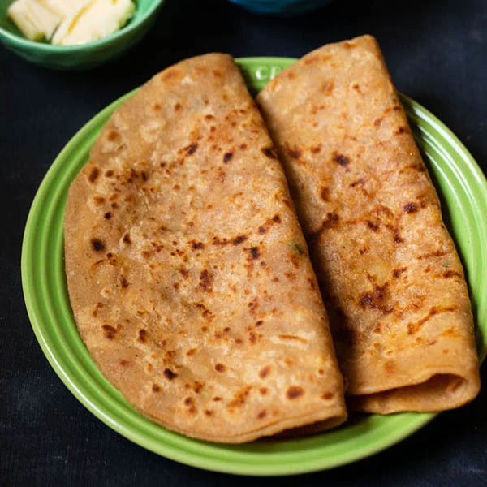

Paratha

Description
Parathas are the shallow-fried version of chapatis. This recipes make crunchier and less-flaky parathas than those I buy from the store. Serve with cinnamon-sugar for a sweet treat or with curries as a scooping bread.
Ingridients
- 1 ½ cups all-purpose flour
- ½ cup whole wheat flour
- 1 teaspoon salt
- 1 tablespoon melted butter
- 1 teaspoon white sugar
- 1 teaspoon dried mixed herbs
- ¾ cup water
- oil for frying
Steps
- Mix all-purpose flour and whole wheat flour in a bowl. Sprinkle salt on top. Add butter, sugar, garlic powder, and dried herbs. Mix together with your fingers. Pour water in gradually; continue to mix by hand until a soft dough is formed.
- Knead dough until smooth and elastic, about 7 minutes. Cover with a damp cloth; let rest for 30 minutes.
- Divide dough into 8 equal portions. Shape into smooth balls; lightly flatten. Dust with flour and roll into thin circles about 1/16-inch thick and 7 inches in diameter.
- Heat oil in a large saucepan over medium heat. Fry each dough circle until golden, about 2 minutes per side. Drain on paper towels.